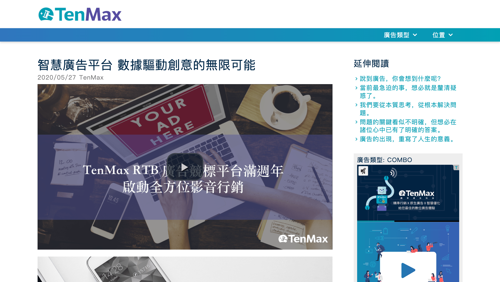
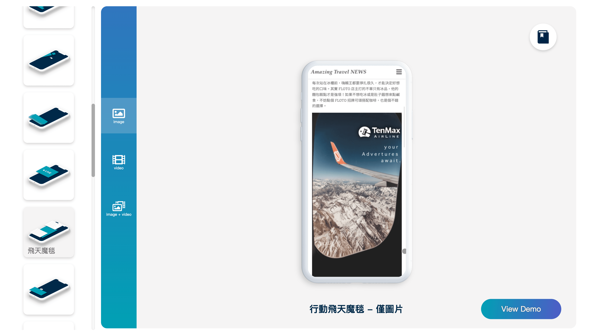
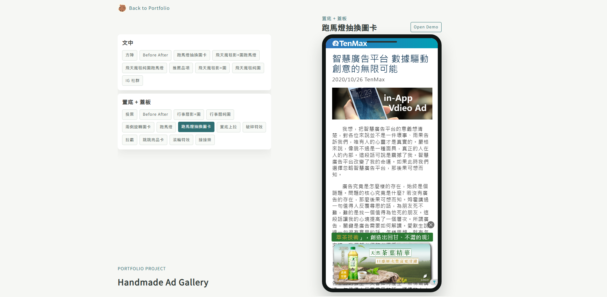
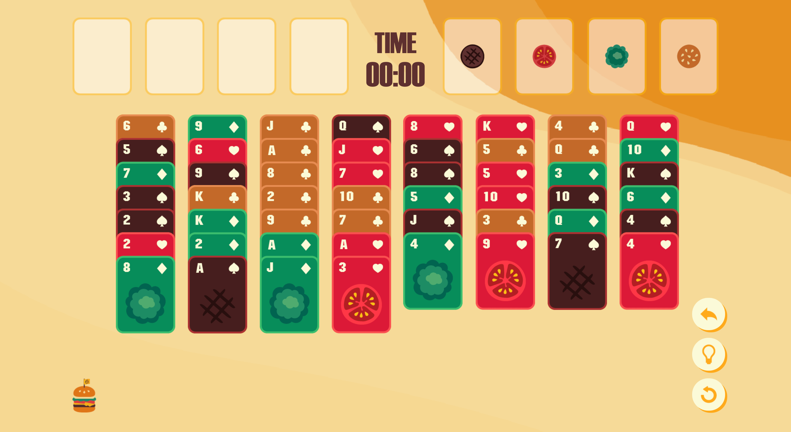
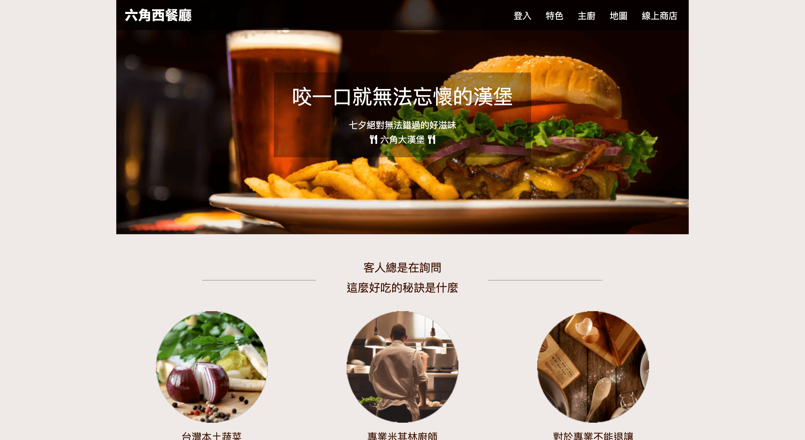

ABOUT
I am a frontend engineer with experience in ad-tech products, UI issue diagnosis, and web interface implementation.
I transitioned into frontend development from an operations background, which helps me connect product requirements, user-facing issues, and implementation details in a practical way.
At TenMax, I worked in a lean team environment across requirement clarification, feature implementation, testing, production issue follow-up, and internal tool maintenance.
My strengths are debugging real-world UI behavior, building lightweight tools that improve team workflows, and keeping implementation details understandable for both technical and non-technical teammates.
RESUME
| EXPERIENCE |
|---|
| TenMax Ad Tech Co., Ltd. |
| 2020/02 ~ 2025/11 |
| Junior Software Engineer (Front-end) |
Responsibilities
Key Contributions
|
| Soft-World International Corporation |
| 2013/04 ~ 2019/04 |
| Operations Specialist |
|
| EDUCATION |
|---|
| Chinese Culture University Department of German Language and Literature |
| 2008 ~ 2012 |
SKILLS
Frontend
HTML5 / CSS3 / SCSS / JavaScript ES6+ / Vue / Responsive Layout
Debugging
UI Issues / Ad Rendering / Cross-browser Checks / DOM & CSS Inspection
Tools
Git / Sourcetree / Chrome DevTools / VS Code / Parcel / Vite / Slack / Teams / Jira / Zeplin / Google Sheets-based Workflows
Workflow
Requirement Clarification / Design Handoff / Manual Testing / Issue Tracking / Production Support
PORTFOLIO

Ad Demo Tool
[Work Project]A demo page for previewing ad placements and format combinations.
- Role
- Built and maintained the preview page, URL parameter controls, and display-position logic for internal review and client-facing demos.
- Tech
- JavaScript / HTML / CSS
- Focus
- Ad rendering logic, configurable previews, and production-oriented debugging.

Ad Gallery
[Work Project]A gallery site for showcasing different advertising formats.
- Role
- Contributed to the gallery workflow and helped make showcase content manageable by non-technical teammates.
- Tech
- JavaScript / HTML / CSS / Google Sheets workflow
- Focus
- Content maintainability, cross-team workflow, and ad format presentation.

Handmade Ad Gallery
[Work Project]An interactive gallery of front-end ad format implementations.
- Role
- Implemented ad layout examples such as mobile overlays, marquees, carousels, voting modules, and calendar-style experiences.
- Tech
- JavaScript / HTML / SCSS
- Focus
- CSS/JS interaction, responsive ad layouts, and publisher-site compatibility.

FreeCell Vue
[Side Project]A Vue-based FreeCell game with custom game logic and responsive interactions.
- Role
- Designed and implemented gameplay flow, move validation, timer tracking, win detection, and responsive UI behavior.
- Tech
- Vue / Vite / JavaScript ES6+ / CSS / GitHub Pages
- Focus
- State management, rule-based interaction logic, and component-based UI development.

FreeCell Legacy Version
[Side Project]A vanilla JavaScript FreeCell project focused on DOM-based gameplay.
- Role
- Implemented card movement, board interactions, and basic game behavior without a frontend framework.
- Tech
- JavaScript ES6+ / HTML / CSS / GitHub Pages
- Focus
- DOM manipulation, event handling, and JavaScript fundamentals.

Responsive Web Design
[Side Project]A front-end practice project for desktop and mobile page adaptation.
- Role
- Built the page structure and responsive layouts for different screen sizes.
- Tech
- HTML / CSS / Responsive Design / GitHub Pages
- Focus
- Semantic structure, layout composition, and mobile-friendly implementation.